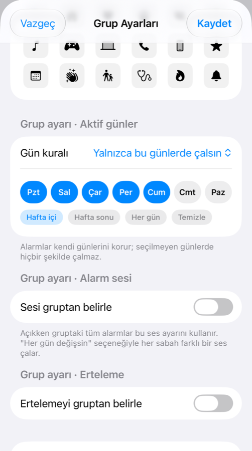
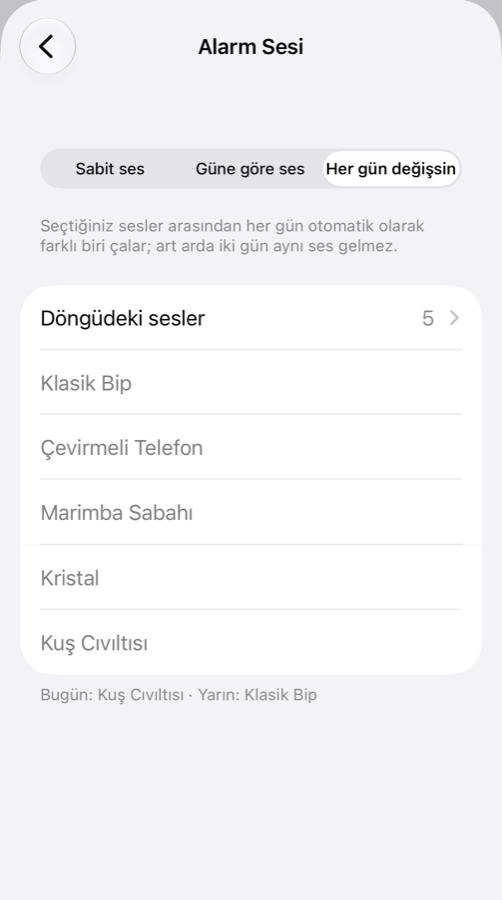
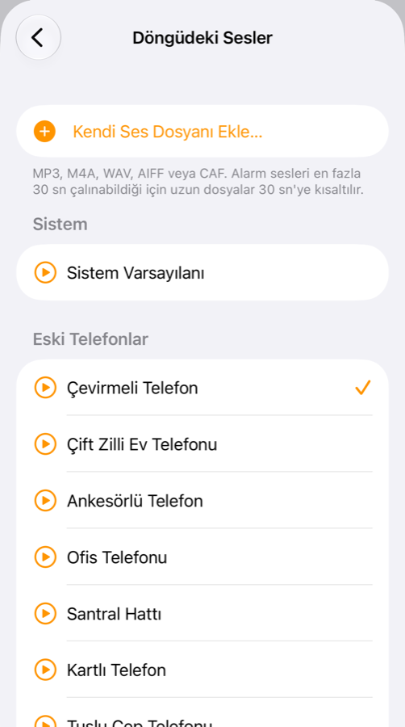

Saat uygulamasının eksik kalan her şeyi
Alarm Pro, iPhone'un yerleşik alarm altyapısını kullanır: alarmlar sessiz modda ve Odak açıkken bile tam ekran çalar.
Açılır gruplar
Gruplar alt alta durur, dokununca alarmlar aşağı doğru açılır. Her grubun ve alarmın kendi açma/kapama anahtarı vardır.
Grup gün kuralı
Hafta içi grubu hafta sonu hiçbir koşulda çalmaz. Günleri grupta bir kez ayarlayın, tüm alarmlara uygulansın.
Her gün farklı ses
Seçtiğiniz sesler arasından her sabah başka biri çalsın; art arda iki gün aynı ses gelmez. İsterseniz her güne ayrı ses atayın.
66 özgün ses
Eski telefon zillerinden yumuşak uyanış seslerine kadar uygulamaya özel üretilmiş sesler. Kendi ses dosyanızı da ekleyebilirsiniz.
Saat'ten içe aktarma
Mevcut iPhone alarmlarınızı Kestirmeler ile tek seferde aktarın; aynı alarm iki kez eklenmez.
Erteleme ve Kilit Ekranı
Erteleme süresini alarm ya da grup bazında seçin; geri sayım Kilit Ekranı'nda ve Dynamic Island'da görünür.
Yakından bakın
Grup ayarları, günlük değişen ses ve kategorili ses kütüphanesi.



Ses kategorileri
Tüm sesler Alarm Pro için özel olarak üretildi.